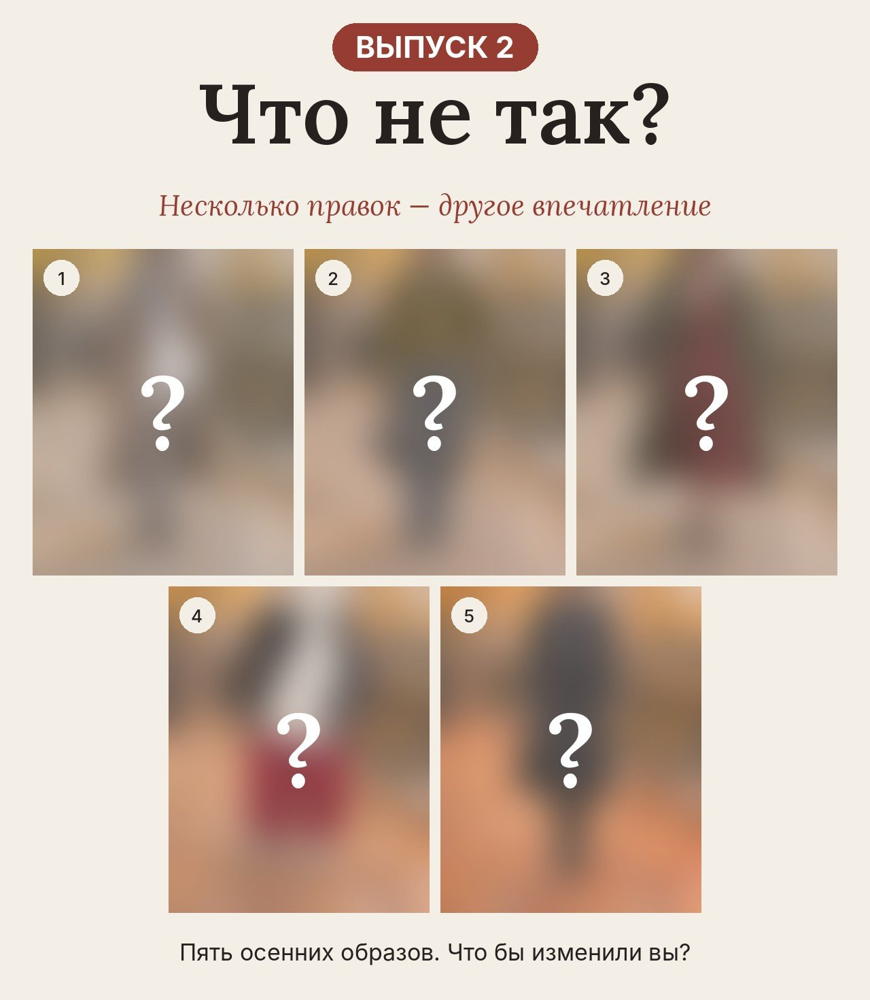

Пять осенних образов. Всё по отдельности хорошо, а вместе что-то не складывается. Выберите, что бы изменили вы, — и сразу увидите результат на фото.
Неправильных ответов нет: есть решения сильнее и слабее.
⭐ лучшее решение · 👌 стало лучше · 💭 так носить можно, но задачу не решает
Прошлый выпуск →Каждый следующий вариант включает предыдущий.
Ваш результат
Больше разборов образов в канале «Стильно с Медведевой».
Прошлый выпуск →Стилист Татьяна Медведева